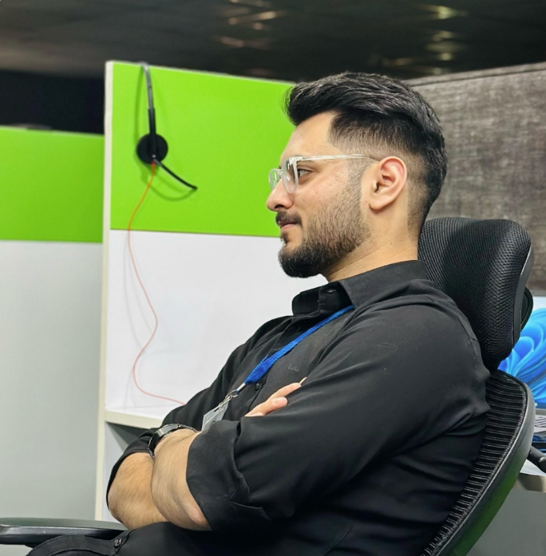

Arsalan Makhdoomi

Summary
I am a Civil Engineering Gold Medalist with strong expertise in CAD/BIM tools such as AutoCAD, Revit, and SketchUp,
as well as rendering software including Lumion, V-Ray, and D5 Render. I have practical experience in structural analysis
using STAAD Pro and ETABS, gained through industry work and internships. With a CGPA of 9.75/10 , I have consistently
excelled academically and also have a solid background in teaching technical subjects like mathematics, physics,
and civil engineering.
Education
- Bachelor’s in Civil Engineering – Islamic University of Science and Technology, Awantipora (2020–2024)
Gold Medalist | CGPA: 9.75 / 10
- Intermediate (12th) – Sri Pratap Higher Secondary School, JKBOSE (2018–2019)
Percentage: 91% (455 / 500)
- High School (10th) – Motherland High School, JKBOSE (2016-2017)
Percentage: 93% (465/500)
Work Experience
-
CAD/BIM Engineer – Intrivis Inc. (iQuasar LLC), Budgam | Mar 2023 – Present.
- Created detailed architectural and structural drawings in AutoCAD and Revit.
- Developed 3D BIM models for residential and commercial projects.
- Produced high-quality renders and walkthroughs using Lumion, V-Ray, and D5 Render.
-
Construction Intern – R&B Construction Division 1, Srinagar | Jan 2023 – Feb 2023.
- Worked on RCC frame building execution.
- Involved in mix design preparation, reinforcement detailing, foundation to slab work.
-
Academic Tutor – Self-employed, Srinagar | Apr 2020 – Nov 2022.
- Taught Mathematics, Physics, and Civil engineering (11th, 12th, diploma, B.Tech level).
- Focused on conceptual clarity, exam preparation, and academic improvement.
Skills
- AutoCAD, Revit, SketchUp ★ ★ ★ ★ ★
- Lumion, V-Ray, D5 Render ★ ★ ★ ★ ★
- STAAD Pro, ETABS ★ ★ ★ ☆ ☆
- BIM Modeling ★ ★ ★ ★ ★
- Structural Analysis ★ ★ ★ ★ ☆
- Construction & Project Management ★ ★ ★ ★ ☆
- Cost Estimation, Site Supervision ★ ★ ★ ★ ☆
- Blueprint Reading ★ ★ ★ ★ ★ ☆
- Material Testing ★ ★ ★ ☆ ☆
- Geotechnical & Structural Design ★ ★ ★ ☆ ☆
- Field Surveying, Roadway Design ★ ★ ★ ★ ☆
- Basic Coding(HTML 5), MS Office (Word, Excel, PowerPoint) ★ ★ ★ ★ ★
Awards and Certifications
Others
My Hobbies
Contact Me